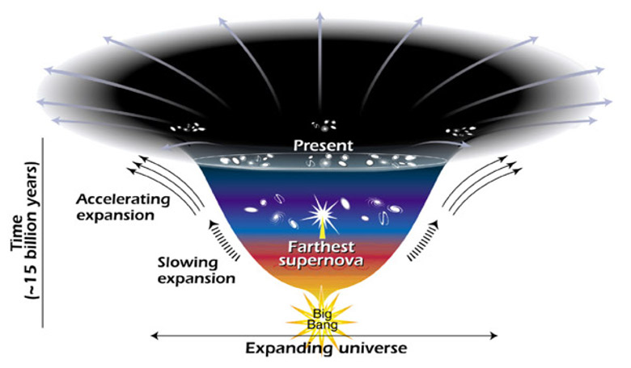
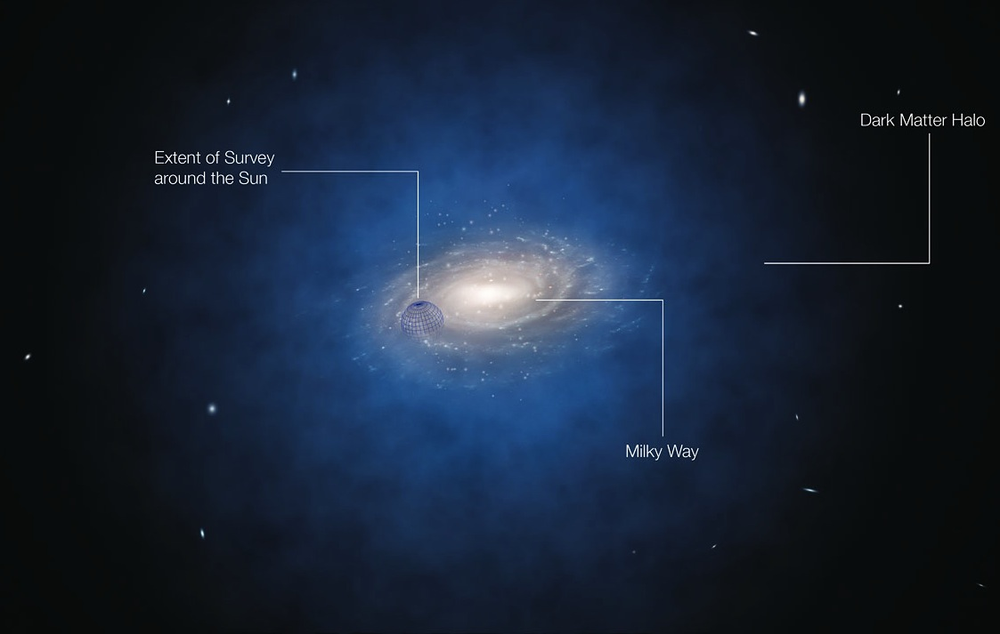
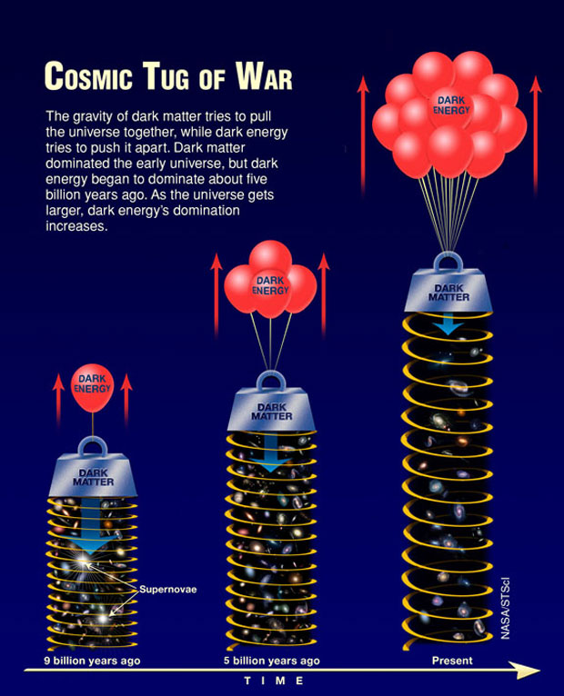

• Every physical thing is only 5%
• Unexplainable forces
• New theories
My topic matters because it shows the importance of understanding our universe fully
My goal for this project is to make an impact on your lives.
Dark energy is the name given to the solution to the expansion of the universe.
According to Dr. Christopher Baird at wtamu.ed, dark energy is the force that pushes apart galaxies and making the universe expand. For example, like a lot of theorists predicted, people thought that the rate at which the universe expands would decrease, and eventually stop at something known as the Big Crunch. But after recent examinations of a distant supernova, astrophysicists have concluded that the rate in which the universe is expanding, actually increased instead of decreased! This should be impossible without an external force, and this external force is deemed dark energy.
Dark matter is a force that tries to pull the universe together, and make it collapse.
Dark matter is a force that tries to pull the universe together, and make it collapse. Support: Dark matter is basically the exact opposite of dark energy. It tugs on galaxies and pulls on the universe. According to wtamu.edu, it takes a lot of dark matter to actually have a gravitational effect on things. For example, it would take planet-size masses just to manipulate Earth-size objects. The reason we know it exists is because it holds galaxies together. For instance, physicists have realized that there shouldn’t be enough gravitational force for galaxies to stay together. Even with a black hole in the middle, there is no way there is enough energy to hold them together. So to compensate for this, scientists have come up with the idea that there is an external force that holds them together, this is dark matter.
In short, dark matter attracts, and dark energy repels.
According to Hetdex.org, the main difference between the two is that dark energy tries to make the universe collapse, and dark energy tries to make it expand. There is a constant battle between the two. During the beginning of the universe, dark matter was dominant and if the universe were to stop right there, it would collapse. As the universe expands, the effects of dark energy increase. So because of the extreme initial force of the Big Bang, there was enough energy to make it past a certain critical point, at about 5 billion years ago, where dark energy became dominant, so now the universe is set to expand forever at an increasing rate.
